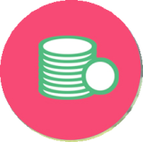

You can apply for membership, if you have participated and successfully completed any of our timed race categories i.e. Marathon / Half Marathon / Open 10K / DHL Corporate Champions, within the defined race cut off timings, over the past 3 years in any of the three featured running events i.e. Standard Chartered Mumbai Marathon/ Airtel Delhi Half Marathon / TCS World 10K Bangalore. You need to provide your latest timing certificate link and participation details at the time of applying for membership.You can apply for membership, if you have been a Dream teamer over the past 3 years and raised Rs 1 lakh and above for charity, in any of our three featured running events i.e. Standard Chartered Mumbai Marathon/ Airtel Delhi Half Marathon / TCS World 10K Bangalore. You need to provide the details of charity contribution at the time of applying for membershipReceive acclaimed badges for various achievement and actions taken by you, so you can brag about it

When you become a member of the Endurunz Club, we offer you scores and points as RUNZAvail Starup RUNZ for Social syncing Facebook, Twitter and any one of your favorite motion tracker apps like Endomodo, Runkeeper & Fitbit
Avail daily RUNZ as per the miles tracked via the synced motion app
On event day runs are given for various activities such as referral, completion of race etc .
Post doing the activities mentioned in "Earning Runz" section, it will take 7 working days for RUNZ to appear in your profile.